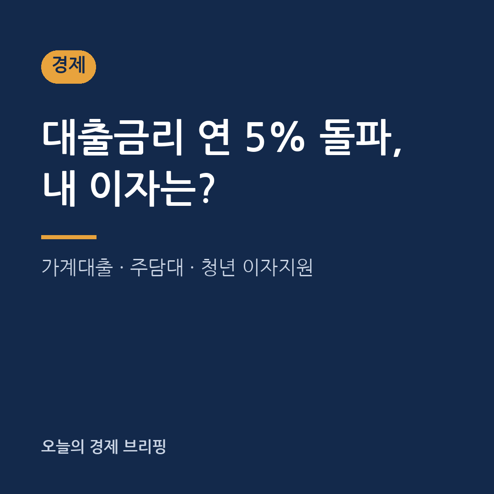
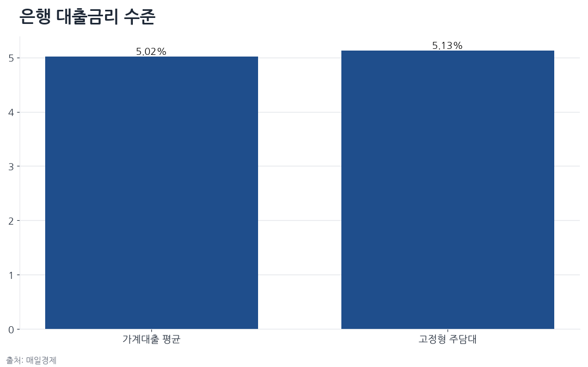

2026-11-25-1436-naver 발행 키트 · 이 페이지는 검색에 노출되지 않습니다.
제목
카테고리
경제태그
본문 (그림·표 포함)
휴대폰 블로그 앱에서는 그림이 같이 붙지 않을 수 있어요. 그때는 [글자만 복사] 후 아래 이미지를 저장해 [그래프1]·[표1] 자리에 첨부하세요.

대출이 있거나 곧 받을 계획이 있으면 요즘 금리 뉴스가 영 마음에 걸리시죠. 오늘 그 걱정을 더 키울 소식이 나왔어요.
▶ 은행 가계대출 금리, 3년 만에 연 5% 넘었어요
은행에서 빌려주는 가계대출의 평균 금리가 연 5.02%까지 올랐어요. 6개월 연속으로 오른 거라, 한두 달 반짝 오른 게 아니라는 뜻이에요.
연 5%를 넘은 건 약 3년 만이에요. 특히 집을 담보로 빌리는 주택담보대출(주담대) 금리는 14년 7개월 만에 가장 높은 수준이라고 해요.

고정금리(금리가 일정 기간 그대로인 방식)로 받는 주담대는 5.13%로 가장 높았어요. 금리가 더 오를까 봐 고정을 택한 분들도 이자가 만만치 않다는 얘기예요.
▶ 내 지갑에는 어떤 영향이 있을까요?
대출 원금이 클수록 이자 차이가 크게 느껴지거든요. 같은 금액을 빌려도 금리가 1%포인트만 달라지면 1년 이자가 원금의 1%만큼 달라져요.
특히 변동금리로 받아 둔 분이라면 다음 금리 조정 시점에 이자가 올라갈 수 있어요. 대출 약정서에서 금리가 바뀌는 주기를 한 번 확인해 두세요.
▶ 청년 전월세 이자 지원은 신청이 몰리고 있어요
금리가 오르다 보니 이자를 대신 보태 주는 제도에 관심이 커지고 있어요. 서울시가 운영하는 청년 임차보증금 대출이 대표적이에요.
올해 1월부터 9월까지 새로 나간 대출이 2,661건으로, 지난해 한 해 전체인 1,302건의 두 배를 넘었어요. 이 대출은 하나은행 한 곳에서만 취급하고 있어요.
그런데 하나은행이 가계대출 총량 관리(은행이 한 해에 늘릴 수 있는 대출 한도를 정부가 관리하는 것) 대상이라는 점이 변수예요. 취급이 줄어들면 다른 은행에서는 같은 이자 지원을 받기 어려울 수 있다는 지적이 나와요.
서울시 청년 임차보증금 대출 신규 실적
| 구분 | 건수 |
|---|---|
| 올해 1~9월 신규 | 2,661건 |
| 지난해 연간 | 1,302건 |
| 취급 은행 | 하나은행 한 곳 |
출처: 매일경제
▶ 이럴 땐 이렇게 확인해 보세요
지금 대출이 있다면 내 금리가 고정인지 변동인지, 다음 조정일이 언제인지부터 보세요. 갈아타기나 상환 계획은 은행 창구나 앱에서 상담받는 게 정확해요.
청년 전월세 대출을 알아보는 분이라면 신청 자격과 취급 은행, 접수 가능 시기를 먼저 확인하세요. 한도가 소진되면 신청 자체가 막힐 수 있거든요.
▶ 한 줄 정리
대출금리는 오르는데 이자 지원 제도는 문이 좁아지는 흐름이라, 내 대출 조건을 미리 점검해 두는 게 좋아요. 여러분은 지금 어떤 금리로 대출을 쓰고 계신가요? 댓글로 이야기 나눠 봐요.
출처 (본문 맨 아래에 붙여넣기 권장)
- 매일경제, 가계대출 금리 5% 돌파…주담대 금리 14년7개월 만에 최고, https://www.mk.co.kr/news/economy/12218043 - 매일경제, [단독] 연봉 5천인데 이자 지원해준다구요? 전월세 신청자 폭발, https://www.mk.co.kr/news/economy/12218000